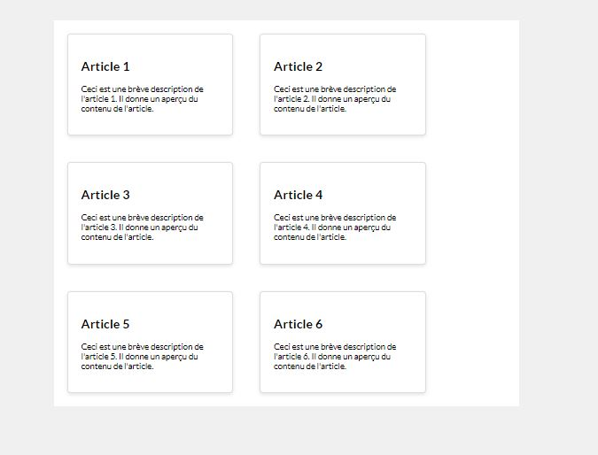
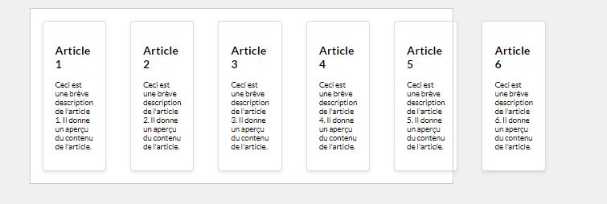
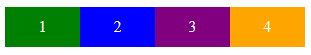
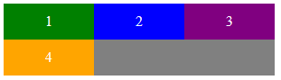
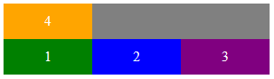

Propriétés sur conteneur Flex
flex-wrap :
Découverte #1
Exemple : Vignettes
Nous désirons afficher des vignettes côte à côte. 
Partons du code suivant : une section comprenant plusieurs articles
<section class="blog-container">
<article class="blog-card">
<h2>Article 1</h2>
<p>Ceci est une brève description de l'article 1. Il donne un aperçu du contenu de l'article.</p>
</article>
<article class="blog-card">
<h2>Article 2</h2>
<p>Ceci est une brève description de l'article 2. Il donne un aperçu du contenu de l'article.</p>
</article>
[...]
</section>
flex-basis. Cette propriété spécifie la largeur initiale de l'élément flexible. Cette propriété sera vue en détail ultérieurement.
/*************start css position flex **********************/
.blog-container{
width: 45rem;
}
.blog-card {
/*The flex-basis property specifies the initial length of a flexible item.*/
flex-basis: 10rem;
}
Par défaut, les articles se positionnent les uns au dessus des autres.
Nous désirons les placer côte à côte.
Malheureusement, le rendu n'est pas au rendez-vous...
La première question à se poser est : Qui est le parent direct des éléments que nous désirons positionner côte à côte ?
La section dont la class est
blog-container. Cet élément sera donc notre conteneurflex.
On observe que les vignettes déborde du conteneur. 
Pourquoi ?
- Le conteneur
blog-containera une largeur fixe - Par défaut, les enfants flex se positionnent côte à côte sur une seule ligne.
On doit donc les autoriser à se placer côte à côte sur plusieurs lignes avec la propriété flex-wrap : wrap;
Exemple : Vignettes inversées
Dans le code pen modifiez flex-wrap : wrap; en flex-wrap : wrap-reverse;
Que constatez-vous ?
Flex-wrap
Étant donné que les éléments peuvent s'adapter à la taille du conteneur, la propriété flex-wrap va indiquer si la taille de ceux-ci doit être adaptée pour tenir sur une seule ou plusieurs lignes verticales ou horizontales en fonction de la direction de l'axe principal.
- nowrap (par défaut): les items sont placés sur une seule ligne dans le sens de l'axe principal 
- wrap: les items sont placés en plusieurs lignes si nécessaire, celles-ci placées dans le sens de l'axe croisé, 
- wrap-reverse: les items sont placés en plusieurs lignes si nécessaire, celles-ci placées dans le sens opposé de l'axe croisé. 